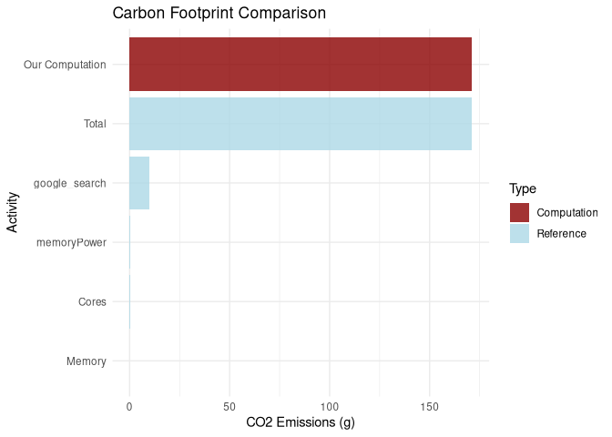

Calculate the environmental impact of your R computations 🌱
The greenAlgoR package provides tools to estimate the carbon footprint and energy consumption of computational tasks in R. Based on the Green Algorithms framework (Lannelongue, Grealey, and Inouye (2021)), this package helps researchers and data scientists understand and minimize the environmental impact of their computational work.
✨ Key Features
- 🔍 Calculate CO2 emissions from R computations based on runtime, CPU, and memory usage
- 🌍 Location-aware estimates using regional carbon intensity data
- 🎯 Targets integration for complete pipeline carbon footprint analysis
- 📊 Visualization tools to compare and contextualize your footprint
- ⚙️ Flexible configuration for different hardware specifications
🚀 Quick Start
library(greenAlgoR)
# Calculate footprint for a 2-hour computation
result <- ga_footprint(runtime_h = 2, location_code = "WORLD")
result$carbon_footprint_total_gCO2 # CO2 emissions in grams
# For your current R session
session_footprint <- ga_footprint(runtime_h = "session")
# For targets pipelines (in a targets project)
targets_footprint <- ga_targets()Installation
greenAlgoR is not available on CRAN for the moment. You can install the stable development version from GitHub with:
# Install from GitHub (development version)
if (!require("devtools", quietly = TRUE)) {
install.packages("devtools")
}
devtools::install_github("adrientaudiere/greenAlgoR")Scientific Foundation
The Green Algorithms Framework
This package implements the methodology from Lannelongue, Grealey, and Inouye (2021), which provides a standardized approach to quantifying the carbon footprint of computational research. The framework considers:
- Energy consumption: Based on CPU usage, memory requirements, and runtime
-
Carbon intensity: Varies by geographical location and energy sources
- Hardware efficiency: Different processors and systems have varying power draws
- Infrastructure: Data center efficiency (PUE - Power Usage Effectiveness)
The Algorithm
The carbon footprint is calculated by estimating the energy draw of the algorithm and the carbon intensity of producing this energy at a given location:
Where the energy needed is:
The key factors are: - Power draw for cores: Depends on CPU model and number of cores - Memory power draw: Based on available RAM memory - Usage factor: Corrects for actual core utilization (default: 100%) - PUE: Power Usage Effectiveness for data center efficiency - PSF: Pragmatic Scaling Factor for multiple runs - Carbon intensity: Location-dependent based on energy sources
📖 Examples
Basic Usage
Simple Calculation
# Calculate footprint for a 2-hour computation
result <- ga_footprint(
runtime_h = 2,
location_code = "WORLD", # Global average
n_cores = 4,
memory_ram = 16
)
cat("Carbon footprint:", result$carbon_footprint_total_gCO2, "g CO2\n")
#> Carbon footprint: 85.60754 g CO2
cat("Energy consumption:", result$energy_needed_kWh, "kWh\n")
#> Energy consumption: 0.1802264 kWhUsing CPU Model
# Specify exact CPU model (automatically sets cores and TDP)
fp_specific <- ga_footprint(
runtime_h = 1,
cpu_model = "Core i3-10300",
location_code = "FR" # France (low carbon intensity)
)
fp_specific$carbon_footprint_total_gCO2
#> [1] 7.458519Location Comparison
# Compare carbon footprint across different locations
locations <- c("WORLD", "FR", "US", "NO", "CN")
footprints <- sapply(locations, function(loc) {
ga_footprint(runtime_h = 1, location_code = loc)$carbon_footprint_total_gCO2
})
comparison <- data.frame(Location = locations, CO2_grams = footprints)
print(comparison)
#> Location CO2_grams
#> WORLD WORLD 29.4247968
#> FR FR 3.1766391
#> US US 26.2617860
#> NO NO 0.4720357
#> CN CN 33.2902858Visualization
# Create a simple comparison plot
fp_example <- ga_footprint(runtime_h = 4, n_cores = 4, memory_ram = 16)
# Simple reference comparison
ref_subset <- fp_example$ref_value[1:5, ] # Top 5 reference activities
ref_subset$type <- "Reference"
# Add our computation
our_computation <- data.frame(
variable = "Our Computation",
value = fp_example$carbon_footprint_total_gCO2,
prop_footprint = NA,
type = "Computation"
)
plot_data <- rbind(ref_subset[, c("variable", "value", "type")],
our_computation[, c("variable", "value", "type")])
plot_data$value <- as.numeric(plot_data$value)
ggplot(plot_data, aes(x = reorder(variable, value), y = value, fill = type)) +
geom_col(alpha = 0.8) +
scale_fill_manual(values = c("Reference" = "lightblue",
"Computation" = "darkred")) +
coord_flip() +
labs(
title = "Carbon Footprint Comparison",
x = "Activity",
y = "CO2 Emissions (g)",
fill = "Type"
) +
theme_minimal()
Current R Session
Calculate the carbon footprint of your current R session:
# Analyze current R session
fp_session <- ga_footprint(runtime_h = "session", add_storage_estimation = TRUE)
cat("Session footprint:", fp_session$carbon_footprint_total_gCO2, "g CO2\n")
#> Session footprint: 0.01999902 g CO2
cat("Session runtime:", fp_session$runtime_h, "hours\n")
#> Session runtime: 0.0006766667 hoursTargets Pipeline Integration
For targets workflows, calculate the complete pipeline footprint:
# In a targets project directory
pipeline_footprint <- ga_targets(
location_code = "FR",
n_cores = 4,
memory_ram = 16
)
pipeline_footprint$carbon_footprint_total_gCO2📚 Documentation
-
Getting Started: See
vignette("greenAlgoR-intro")for comprehensive examples -
Targets Integration: See
vignette("targets-integration")for pipeline analysis -
Function Reference: Use
?ga_footprintand?ga_targetsfor detailed documentation
🤝 Contributing
We welcome contributions! Please:
- Check existing issues
- Submit bug reports or feature requests
- Fork the repository and submit pull requests
- Follow the existing code style and add tests for new features
💡 Best Practices
- Optimize your code: Reduce runtime to minimize carbon footprint
-
Choose efficient hardware: Match computational resources to your needs
- Consider location: Run computations in regions with cleaner energy
- Monitor regularly: Track your carbon footprint across projects
- Share awareness: Include carbon footprint in research reporting
📄 Citation
If you use greenAlgoR in your research, please cite both the package and the underlying methodology:
# For greenAlgoR package
Taudière, A. (2024). greenAlgoR: Carbon Footprint Estimation for R Computations.
R package version 0.1.1. https://github.com/adrientaudiere/greenAlgoR
# For the Green Algorithms methodology
Lannelongue, L., Grealey, J., Inouye, M. (2021). Green Algorithms:
Quantifying the Carbon Footprint of Computation. Advanced Science, 8(12), 2100707.
https://doi.org/10.1002/advs.202100707Frequently Asked Questions and Troubleshooting
General Questions
What is greenAlgoR?
greenAlgoR is an R package that estimates the carbon footprint and energy consumption of computational tasks. It’s based on the Green Algorithms framework by Lannelongue et al. (2021) and helps researchers understand the environmental impact of their computational work in R.
How accurate are the estimates?
The estimates are based on the peer-reviewed Green Algorithms methodology and use real-world data for: - CPU power consumption from hardware specifications - Regional carbon intensity from energy grid data - Memory power consumption from published research
However, actual consumption may vary based on specific hardware configurations, software optimization, and other factors.
Which locations are supported?
The package supports carbon intensity data for many countries and regions. Common location codes include: - "WORLD" - Global average - "US" - United States - "GB" - United Kingdom - "DE" - Germany - "CN" - China - "FR" - France
See the Green Algorithms database for the complete list.
Common Issues
“CPU model not found” error
Problem: You get an error when specifying a cpu_model.
Solution: 1. Use "Any" to use generic TDP values instead of a specific model 2. Check that your CPU model name exactly matches the Green Algorithms database 3. Manually specify TDP_per_core and n_cores instead of using cpu_model
Memory detection issues
Problem: Memory RAM is not detected automatically.
Solution: Manually specify the memory_ram parameter:
ga_footprint(runtime_h = 1, memory_ram = 16) # 16 GBSession runtime calculation
Problem: runtime_h = "session" gives unexpected results.
Explanation: Session runtime is calculated from when R started, not when your analysis began. For specific computations, use explicit runtime:
# Time a specific operation
start_time <- Sys.time()
# ... your computation ...
end_time <- Sys.time()
runtime_hours <- as.numeric(difftime(end_time, start_time, units = "hours"))
ga_footprint(runtime_h = runtime_hours)Targets pipeline issues
Problem: ga_targets() fails or gives zero footprint.
Solutions: 1. Ensure you’re in a directory with a targets project 2. Check that targets have been run with tar_make() 3. Verify targets metadata exists:
Best Practices
Choosing appropriate parameters
Hardware Configuration: - Use actual hardware specs when possible - For cloud computing, check provider documentation - Personal laptops typically have PUE close to 1.0 - Data centers typically have PUE = 1.2-2.0
Location Selection: - Use your actual geographical location - For cloud computing, use the data center location - Consider running computations in regions with cleaner energy (lower carbon intensity)
Optimizing for lower carbon footprint
- Reduce runtime: Optimize your code for efficiency
- Choose efficient hardware: Match resources to your needs
- Select clean energy regions: Run computations where renewable energy is prevalent
- Cache results: Avoid re-running expensive computations
- Profile your code: Identify and optimize bottlenecks
Integration with workflows
For research projects:
# Include in your analysis scripts
footprint <- ga_footprint(runtime_h = "session")
cat("Analysis carbon footprint:", footprint$carbon_footprint_total_gCO2, "g CO2\n")
# Save for reporting
saveRDS(footprint, "results/carbon_footprint.rds")For targets pipelines:
# Add to your _targets.R file
list(
# ... your other targets ...
tar_target(
carbon_footprint,
ga_targets(location_code = "FR"),
description = "Calculate pipeline carbon footprint"
)
)Technical Details
Understanding the output
The ga_footprint() function returns a list with detailed breakdown:
-
carbon_footprint_total_gCO2: Total CO2 emissions in grams -
carbon_footprint_cores: CPU contribution to emissions -
carbon_footprint_memory: Memory contribution to emissions
-
energy_needed_kWh: Total energy consumption in kilowatt-hours -
runtime_h: Actual runtime used in calculation -
ref_value: Reference activities for comparison (if requested)
Customizing calculations
Custom carbon intensity: Currently, the package uses predefined carbon intensity values per country. If you are interested in custom values, please post an issue.
Custom hardware parameters: You can specify hardware configurations:
ga_footprint(
runtime_h = 2,
TDP_per_core = 25, # High-performance CPU
n_cores = 16, # Many cores
memory_ram = 128, # Large memory
PUE = 1.4, # Data center efficiency
PSF = 3 # Account for 3 repeated runs
)Getting Help
-
Check the documentation: Use
?ga_footprintand?ga_targets -
Read the vignettes:
vignette("greenAlgoR-intro")andvignette("targets-integration") - Report issues: Submit bug reports at https://github.com/adrientaudiere/greenAlgoR/issues
Contributing
We welcome contributions! See the repository README for guidelines on: - Reporting bugs - Suggesting features
- Submitting code improvements - Improving documentation
References
- Lannelongue, L., Grealey, J., Inouye, M. (2021). Green Algorithms: Quantifying the Carbon Footprint of Computation. Advanced Science, 8(12), 2100707.
- Green Algorithms website: https://calculator.green-algorithms.org/
- Package repository: https://github.com/adrientaudiere/greenAlgoR